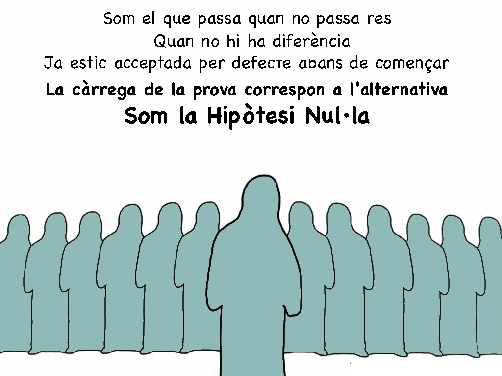
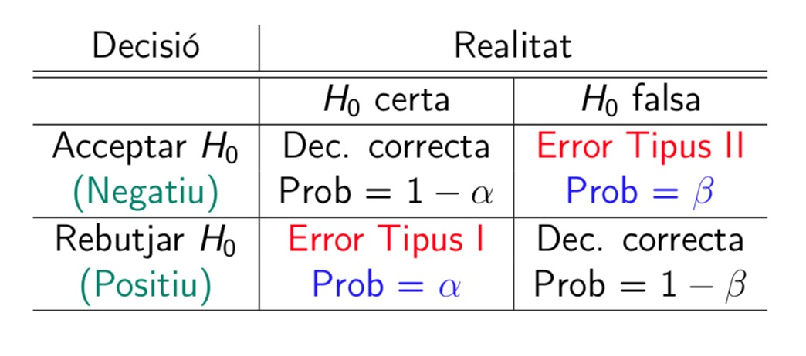
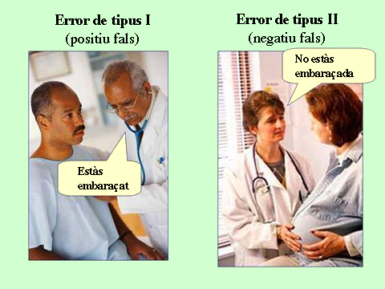
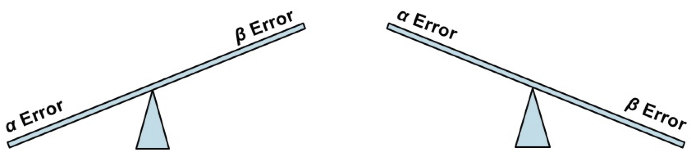
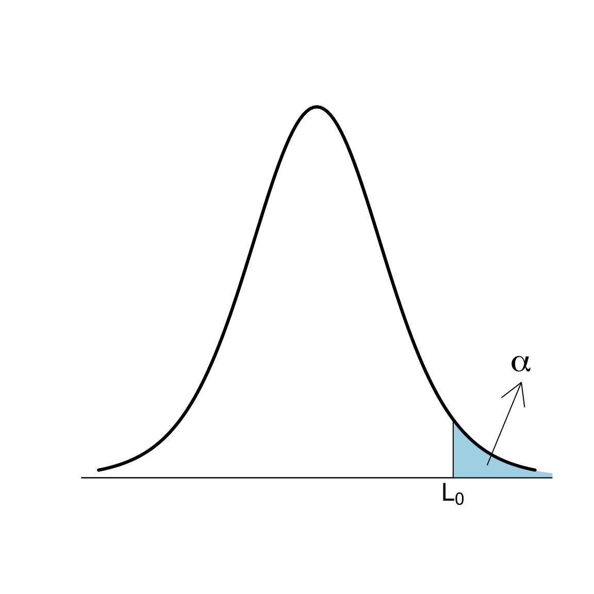
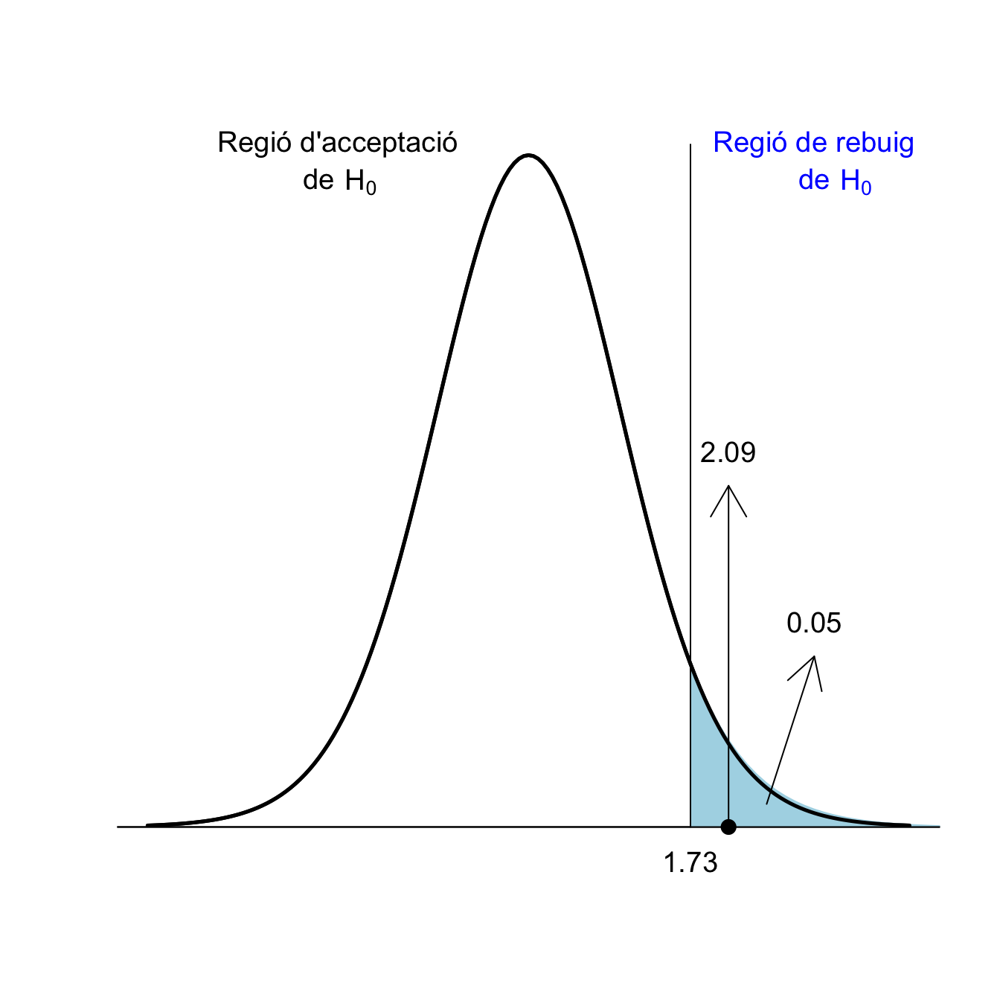
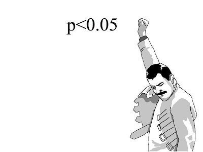

Tema 4 Contrastos d’hipòtesis: Generalitats
En moltes situacions, s’ha de prendre a partir d’una mostra una decisió sobre si es pot acceptar o rebutjar una hipòtesi relativa al valor d’un paràmetre d’una població o diverses poblacions. Per exemple:
Volem saber si una moneda està trucada a favor de cara. Per decidir-ho, la llençam en l’aire una sèrie de vegades, i comptam quantes cares surten.
Volem decidir si un tractament nou A és més efectiu que el tractament vell B en la curació d’una malaltia X. Per decidir-ho, portam a terme un assaig clínic, tractant amb A un grup de malalts i amb B un altre grup de malalts, i comparam la taxa de curació dels tractaments sobre aquests dos grups.
El mètode estadístic que s’empra per acceptar o rebutjar una hipòtesi rep el nom de contrast d’hipòtesis.
4.1 Hipòtesis nul·la i alternativa
En un contrast d’hipòtesis, es comparen sempre dues hipòtesis alternatives: la hipòtesi nul·la \(H_{0}\) i la hipòtesi alternativa \(H_{1}\). Se sol plantejar formalment \[ \left\{\begin{array}{ll} H_{0}:\text{hipòtesi nul·la}\\ H_{1}:\text{hipòtesi alternativa} \end{array} \right. \]
En un contrast d’hipòtesis:
Típicament, la hipòtesi nul·la \(H_{0}\) és “no hi ha diferència”, “no passa res”, “no hi ha res d’estrany” o l’equivalent en el context del contrast:
La moneda és honrada (50% de probabilitat de cara)
Els tractaments A i B són igual d’efectius en la curació de la malaltia X
La hipòtesi alternativa \(H_{1}\) planteja la diferència de la qual cercam evidència:
La moneda està trucada a favor de cara (més del 50% de probabilitat de cara)
A és més efectiu que B en la curació de la malaltia X
Per defecte, estam disposats a acceptar \(H_0\): que no hi ha diferència, no passa res.
Per defecte, estam disposats a acceptar que la moneda és honrada (la majoria ho són, no?)
Per defecte, estam disposats a acceptar que els dos tractaments són igual d’efectius
Si obtenim evidència suficient que \(H_0\) és falsa, rebutjarem \(H_0\) en favor de \(H_1\) i conclourem que \(H_1\) és vertadera.
Què vol dir “obtenir evidència suficient que \(H_0\) és falsa”? Doncs que les proves obtingudes fan que \(H_0\) sigui inversemblant (mala de creure) per comparació amb \(H_1\):
Tendrem evidència que la moneda està trucada a favor de cara si a la nostra sèrie de llençaments la proporció de cares és tan i tan gran que fa molt difícil creure que la probabilitat de cara sigui del 50%
Tendrem evidència que el tractament A és més efectiu que B en la curació de la malaltia X si en el nostre assaig la taxa de curació de la malaltia X amb el tractament A és tan i tan més gran que la de B que fa molt difícil creure que els dos tractaments siguin iguals d’efectius
Si no obtenim evidència suficient que \(H_0\) és falsa, és a dir, si les nostres dades són compatibles amb \(H_0\), no podrem rebutjar-la: acceptarem la hipòtesi nul·la.
Acceptarem que la moneda no està trucada a favor de cara si a la nostra sèrie de llençaments la proporció de cares no és prou gran com per fer molt difícil creure que sigui honrada
Acceptarem que el tractament A és igual d’efectiu que B en la curació de la malaltia X si en el nostre assaig la taxa de curació de la malaltia X amb el tractament A no és prou més gran que la de B com per fer molt difícil creure que els dos tractaments siguin iguals d’efectius
Per exemple, si en una seqüència de 30 llençaments d’una moneda obtenim totes les vegades cara, segurament ho considerarem evidència que la moneda està trucada, però no demostra que la moneda estigui trucada. Sí, fa mal de creure que sigui honrada, però no és impossible: la moneda podria ser honrada i per pur atzar nosaltres haver tengut aquesta ratxa de cares. I tampoc podem dir que sigui improbable que sigui honrada, ja que nosaltres sabem calcular \[ P(\text{30 cares en 30 llençaments}|\text{La moneda és honrada})=0.5^{30} \] però no sabem calcular \[ P(\text{La moneda és honrada}|\text{30 cares en 30 llençaments}). \]
Per exemple, si en una seqüència de 4 llençaments d’una moneda obtenim 2 cares, haurem d’acceptar que la moneda és honrada. Però podria ser que estigués lleugerament escorada cap a cara i no haver-se notat en una seqüència tan curta de llençaments.
Exemple 4.1 En un judici (on l’acusat és innocent si no es demostra el contrari, i per tant estam disposats a acceptar per defecte que és innocent), se cerca evidència que l’acusat és culpable, per tant aquesta és la hipòtesi alternativa:
- El contrast és \[ \left\{\begin{array}{ll} H_{0}:\text{L'acusat és innocent}\\ H_{1}:\text{L'acusat és culpable} \end{array} \right. \]
S’aporten proves
Si el jurat troba prou incriminatòries les proves, “més enllà de tot dubte raonable”, declara culpable l’acusat (rebutja \(H_0\) en favor de \(H_1\))
Si el jurat no les troba prou incriminatòries, el considera no culpable (no rebutja \(H_{0}\))
Observau que considerar no culpable no és el mateix que demostrar que és innocent: simplement, es considera que l’acusat no és culpable si no s’ha trobat prou evidència que sigui culpable.
Exemple 4.2 Un examen és un contrast d’hipòtesis. En aquest cas, “no passa res” significa que l’estudiant és com si no hagués anat al curs, no ha après res, i per tant aquesta és la hipòtesi nul·la; amb l’examen cercam evidència que l’estudiant ha après la matèria, per tant aquesta serà la hipòtesi alternativa:
Contrast: \[ \left\{\begin{array}{ll} H_{0}:\text{L'estudiant no sap la matèria}\\ H_{1}:\text{L'estudiant sap la matèria} \end{array} \right. \]
Prenem una mostra del coneixement de l’estudiant (l’estudiant fa l’examen)
Si hi ha prou evidència en favor de \(H_1\) (si l’examen li surt prou bé), rebutjam \(H_0\): decidim que l’estudiant sap la matèria, aprova l’assignatura
Si no hi ha prou evidència en favor de \(H_1\) (si l’examen no li surt prou bé), ens quedam amb \(H_0\): concloem que l’estudiant no ha après la matèria, suspèn l’assignatura

Exemple 4.3 Ens trobam amb la notícia següent al diari, i ens demanam si les dones practiquen realment menys esport que els homes.
Aquesta pregunta la podem plantejar de moltes maneres:
Totes les dones fan cada dia menys hores d’esport que tots els homes?
Si prenc una dona i un home a l’atzar, hi ha més d’un 50% de probabilitat que ella practiqui menys esport que ell?
La majoria de les dones fan cada dia menys hores d’esport que la majoria dels homes?
La proporció de practicants d’esport entre les dones és més petita que entre els homes?
La mitjana setmanal de vegades que les dones practiquen esport és més petita que la dels homes?
La mitjana setmanal d’hores que les dones practiquen esport és més petita que la dels homes?
…
Cada una d’aquestes preguntes es traduiria en un contrast d’hipòtesis diferent i possiblement mostres de tipus de dades diferents per realitzar-los.
Com que aquí estam tractant contrastos sobre paràmetres poblacionals (mitjanes, proporcions, etc.), podríem plantejar algun dels tres darrers. Anem a centrar-nos en la darrera qüestió, sobre mitjanes setmanals d’hores d’esport.
Aquí, les variables poblacionals d’interés són:
\(X_d\): “Prenc una dona i calcul el seu nombre mitjà d’hores setmanals d’esport”, amb mitjana \(\mu_d\): la mitjana d’hores setmanals d’esport de les dones (la mitjana de les mitjanes d’hores setmanals d’esport de totes les dones és la mitjana d’hores setmanals d’esport de les dones).
\(X_h\): “Prenc un home i calcul el seu nombre mitjà d’hores setmanals d’esport”, amb mitjana \(\mu_h\): la mitjana d’hores setmanals d’esport dels homes
El contrast que volem realitzar és
Hipòtesi nul·la: no hi ha diferència entre les mitjanes d’hores setmanals d’esport d’homes i dones
Hipòtesi alternativa: la mitjana d’hores setmanals d’esport de les dones és més petita que la dels homes
És a dir \[ \left\{\begin{array}{ll} H_{0}: \mu_d=\mu_h\\ H_{1}:\mu_d<\mu_h \end{array} \right. \]
El procediment per realitzar-lo serà:
Prenem mostres aleatòries de dones i d’homes i els demanam pels seus hàbits de pràctica d’esport
Calculam la mitjana mostral \(\overline{X}_d\) d’hores setmanals d’esport de les dones de la mostra
Calculam la mitjana mostral \(\overline{X}_h\) d’hores setmanals d’esport dels homes de la mostra
Si \(\overline{X}_d\) és molt més petita que \(\overline{X}_h\), ho prendrem com a evidència que \(\mu_d<\mu_h\)
Si \(\overline{X}_d\) no és molt més petita que \(\overline{X}_h\), no podrem rebutjar que \(\mu_d=\mu_h\)
Què significa “\(\overline{X}_d\) molt més petita que \(\overline{X}_h\)”? Una opció, que podríem importar del tema anterior, seria calcular un interval de confiança del 95% per a \(\mu_d-\mu_h\) a partir de la mostra:
Si està totalment a l’esquerra del 0, amb un 95% de confiança podem concloure que \(\mu_d<\mu_h\)
En cas contrari (si conté el 0 o si està totalment a la dreta del 0), amb un 95% de confiança no podem concloure que \(\mu_d<\mu_h\)
Com que aquí voldrem filar més prim que això del “nivell de confiança”, el procediment serà una mica més complicat (bàsicament, emprarem diferents fórmules per calcular els intervals de confiança segons la forma que tengui la hipòtesi alternativa).
Abans de tancar aquesta secció, volem emfatitzar algunes advertències.
Aquí les hipòtesis del contrast comparaven les mitjanes poblacionals d’hores setmanals d’esport de les dones i els homes, no les mitjanes mostrals d’hores setmanals d’esport de les dones i els homes de la nostra mostra.
Per comparar les mitjanes mostrals no ens fa falta un contrast d’hipòtesis: les calculam i punt. En canvi, com que no podem calcular les mitjanes d’hores setmanals d’esport de totes les dones i de tots els homes, ens veiem obligats a fer un contrast d’hipòtesis.
Si no podem assegurar que les dones practiquin menys esport que els homes (perquè no hàgim trobat evidència a favor d’aquesta hipòtesi), això no significarà que hàgim trobat evidència que els homes i les dones practiquin la mateixa quantitat d’esport o que les dones en practiquin més.
Simplement, significarà que l’evidència a favor de \(H_1\) no ha estat prou forta com per poder afirmar que és vertadera i per tant acceptam que tothom practica la mateixa quantitat d’esport.
Si per exemple al nostre estudi haguéssim trobat que \(\overline{X}_d=\overline{X}_h\), això seria compatible amb la hipòtesi nul·la \(\mu_d=\mu_h\), i per això no la podríem rebutjar, però no aporta evidència que \(\mu_d=\mu_h\), ja que segurament també seria compatible, per exemple, amb \(\mu_d=\mu_h+0.0007\) (les dones fan, de mitjana, un minut més d’esport a la setmana que els homes).
La pregunta la plantejam abans d’obtenir la mostra. Si estam interessats en el contrast \[ \left\{\begin{array}{ll} H_{0}: \mu_d=\mu_h\\ H_{1}:\mu_d<\mu_h \end{array} \right. \] i obtenim que \(\overline{X}_d\) és molt més gran que \(\overline{X}_h\) en la nostra mostra, concloem que no tenim evidència que \(\mu_d<\mu_h\) i punt. És fer trampes dir: “No hem trobat evidència que les dones practiquin menys esport que els homes, però si amb aquestes mateixes dades realitzam el contrast \[ \left\{\begin{array}{ll} H_{0}: \mu_d=\mu_h\\ H_{1}:\mu_d>\mu_h \end{array} \right. \] sí que obtenim evidència que elles practiquen més esport que ells.”
D’això s’en diu “anar a pescar” o també “torturar les dades”: obtenir unes dades i cercar de què donen evidència. És mala praxis científica. Qualsevol conjunt de dades, si el torturam prou, acaba donant evidència de qualque cosa.
No confongueu \[ \left\{\begin{array}{ll} H_{0}: \mu_d=\mu_h\\ H_{1}:\mu_d<\mu_h \end{array} \right. \] amb \[ \left\{\begin{array}{ll} H_{0}: \mu_d=\mu_h\\ H_{1}:\mu_d\neq \mu_h \end{array} \right. \] que tradueix la pregunta "Els homes i les dones, de mitjana, practiquen esport un nombre diferent d’hores a la setmana?’’
Regles per triar \(H_0\) i \(H_1\) en aquest curs:
\(H_0\) sempre ha de significar “no hi ha diferència” i s’ha de definir formalment mitjançant una igualtat
\(H_1\) és la hipòtesi de la que cercam evidència, i s’ha de definir formalment mitjançant alguna cosa “estricta”:
Hipòtesi unilateral (one-sided; també d’una cua, one-tailed): definida amb < o amb >
- Hipòtesi bilateral (two-sided; també de dues cues, two-tailed): definida amb \(\neq\)
Els contrastos prenen el nom del tipus d’hipòtesi alternativa: contrast unilateral, de dues cues, etc.
4.2 Un exemple
Tenc una moneda, i crec que està trucada a favor de cara. Vull contrastar-ho.
Aquí la variable aleatòria \(X\) que ens interessa és “Llenç la moneda en l’aire i mir si surt cara”, que és Bernoulli amb probabilitat d’èxit (és a dir, probabilitat de treure cara amb la meva moneda) \(p_{\mathit{Cara}}\).
La hipòtesi nul·la serà que la moneda no està trucada (no li passa res a la meva moneda), i l’alternativa (de la que cerc evidència) que la moneda està trucada a favor de cara. En termes de \(p_{\mathit{Cara}}\), el contrast és \[ \left\{\begin{array}{ll} H_{0}:p_{\mathit{Cara}}= 0.5\\ H_{1}:p_{\mathit{Cara}}> 0.5 \end{array} \right. \]
Exemple 4.4 Suposem que llenç la moneda en l’aire 3 vegades i obtenc 3 cares. És evidència suficient que està trucada?
Diguem \(S_3\) a la variable aleatòria “Nombre de cares en 3 llençaments d’aquesta moneda.”
Si la moneda no està trucada, \(S_3\) és binomial, \(S_3\sim B(3,0.5)\), i per tant \[ P(S_3=3)=0.5^{3}=0.125 \]
El resultat obtingut no és molt improbable amb una moneda honrada: passaria en 1 de cada 8 seqüències de 3 llençaments. Per tant, no és evidència suficient que estigui trucada.
Exemple 4.5 Suposem que ara llenç la moneda en l’aire 10 vegades i obtenc 10 cares. És evidència suficient que està trucada?
Diguem ara \(S_{10}\) a la variable aleatòria “Nombre de cares en 10 llençaments.”
Si la moneda no està trucada, \(S_{10}\sim B(10,0.5)\) i per tant \[ P(S_{10}=10)=0.5^{10}=0.001 \]
El resultat obtingut és molt improbable si la moneda no està trucada: si la moneda fos honrada, només en 1 de cada 1000 seqüències de 10 llençaments obtendríem 10 cares. És a dir:
El resultat del nostre experiment seria molt estrany si la moneda fos honrada, per tant és inversemblant que sigui honrada.
Ho consideram evidència que està trucada.
Fixau-vos en el procediment:
Hem plantejat el contrast: \[ \left\{\begin{array}{ll} H_{0}:p_{\mathit{Cara}}= 0.5\\ H_{1}:p_{\mathit{Cara}}> 0.5 \end{array} \right. \]
Hem recollit una mostra aleatòria: la seqüència de llençaments
Hem triat un estadístic de contrast amb distribució mostral coneguda quan \(H_0\) és vertadera: al nostre cas, el nombre de cares
Hem calculat el valor d’aquest estadístic sobre la nostra mostra
Hem calculat la probabilitat que l’estadístic prengui el valor observat si \(H_0\) és vertadera
Si aquesta probabilitat és molt petita, ho consideram evidència que \(H_1\) és vertadera
Si no és prou petita, no tenim evidència que \(H_0\) sigui falsa
Bé, això és el que hem fet, però no és del tot correcte. Als punts (5) i (6) diem que: “Calculam la probabilitat que l’estadístic prengui el valor observat si \(H_0\) és vertadera i si és molt petita, ho consideram evidència que \(H_1\) és vertadera.” Segur??
Suposem que, al contrast anterior, llençam la moneda en l’aire 10 vegades i ara obtenim 10 creus. És evidència suficient que està trucada a favor de cara? Òbviament no ho pot ser, però la probabilitat és la mateixa que abans: \[ P(S_{10}=0)=0.5^{10}=0.001 \]
En molts casos, la probabilitat d’obtenir exactament el que hem obtingut pot ser molt petita, independentment del que hàgim obtingut. Per exemple, suposem que llençam la moneda en l’aire 10000 vegades i obtenim 5000 cares. Si la moneda és honrada, el nombre de cares seguirà una distribució binomial \(B(10000,0.5)\) i la probabilitat d’obtenir 5000 cares serà
dbinom(5000,10000,0.5)=0.008, ben petita, però clarament si la meitat de llençaments donen cara, no podem tenir mai evidència que la moneda estigui trucada.O, encara més exagerat, si l’estadístic de contrast té distribució contínua, recordau que la probabilitat que una variable aleatòria contínua prengui un valor concret és 0. Més petit impossible, però no sempre rebutjarem la hipòtesi nu·la.
Al nostre exemple de la moneda, com que la hipòtesi nul·la és \(p_{\mathit{Cara}}= 0.5\) i la hipòtesi alternativa és \(p_{\mathit{Cara}}> 0.5\), el p-valor és la probabilitat que, si \(p_{\mathit{Cara}}= 0.5\), el nombre de cares sigui tan o més gran que l’obtingut a la nostra mostra.
En els dos exemples anteriors concrets, on obteníem 3 cares en 3 llençaments i 10 cares en 10 llençaments, és el mateix demanar que el nombre de cares sigui igual a l’obtingut i demanar que el nombre de cares sigui més gran o igual que l’obtingut, perquè en els dos experiments hem obtingut el nombre màxim possible de cares; per exemple, treure 3 o més cares en 3 llençaments és exactament el mateix que treure 3 cares en 3 llençaments. Però en general no serà el cas.
Exemple 4.6 Tornem al nostre contrast \[ \left\{\begin{array}{ll} H_{0}:p_{\mathit{Cara}}= 0.5\\ H_{1}:p_{\mathit{Cara}}> 0.5 \end{array} \right. \] Suposem que llenç la moneda en l’aire 10 vegades i obtenc 7 cares. És evidència suficient que està trucada?
Seguim dient \(S_{10}\) a la variable aleatòria “Nombre de cares en 10 llençaments”. Si la moneda no està trucada, \(S_{10}\sim B(10,0.5)\).
Com que la hipòtesi alternativa és \(p_{\mathit{Cara}}> 0.5\), “obtenir un nombre de cares tan extrem o més que el que hem obtingut en el sentit de la hipòtesi alternativa” és treure tantes cares com les que hem obtingut o més, és a dir treure 7 o més cares.
Per tant
\[
\text{p-valor}=P(S_{10}\geqslant 7)=\texttt{1-pbinom(6,10,0.5)}=0.172
\]
Un resultat tan extrem o més que l’obtingut no és molt improbable si la moneda no està trucada: passaria 1 de cada 6 vegades. Per tant, com que és bastant compatible amb el fet que la moneda sigui honrada, no ho podem considerar evidència que estigui trucada a favor de cara.
Exemple 4.7 Tenc una moneda, i ara crec que està trucada a favor de creu. Vull contrastar-ho. Plantejat en termes de \(p_{\mathit{Cara}}\), el contrast que vull realitzar és \[ \left\{\begin{array}{ll} H_{0}:p_{\mathit{Cara}}= 0.5\\ H_{1}: p_{\mathit{Cara}}< 0.5 \end{array} \right. \] Suposem que llenç la moneda en l’aire 10 vegades i obtenc 1 cara. És evidència suficient que \(p_{\mathit{Cara}}< 0.5\)?
Seguim dient \(S_{10}\) a la variable aleatòria “Nombre de cares en 10 llençaments d’aquesta moneda.” Si la moneda no està trucada, \(S_{10}\sim B(10,0.5)\).
Ara, com que \(H_{1}\) és \(p_{\mathit{Cara}}< 0.5\), “obtenir un nombre de cares tan extrem o més que el que hem obtingut en el sentit de la hipòtesi alternativa” és treure tantes cares com les que hem obtingut o menys, és a dir treure 1 cara o cap. Per tant \[ \text{p-valor}=P(S_{10}\leqslant 1)=\texttt{pbinom(1,10,0.5)}=0.01 \] Un resultat tan extrem o més que l’obtingut és molt improbable si \(p_{\mathit{Cara}}= 0.5\): passaria en 1 de cada 100 seqüències de 10 llençaments. Ho podem considerar evidència que la moneda està trucada a favor de creu.
4.3 El p-valor
El p-valor d’un contrast és la probabilitat que, si la hipòtesi nul·la és vertadera, l’estadístic de contrast prengui en una mostra aleatòria simple de la mateixa mida que la nostra un valor tan o més extrem, en el sentit de la hipòtesi alternativa, que l’obtingut amb la mostra emprada per realitzar el contrast.
Ho tornarem a repetir, posant èmfasi en els components fonamentals de la definició. El p-valor és:
- La probabilitat que,
- si la hipòtesi nul·la és vertadera,
- l’estadístic de contrast prengui en una mostra aleatòria simple de la mateixa mida que la nostra
- un valor tan o més extrem, en el sentit de la hipòtesi alternativa,
- que l’obtingut amb la nostra mostra.
Exemple 4.8 Suposem que al contrast de les mitjanes d’hores setmanals d’esport d’homes i dones de l’Exemple 4.3 empram com a estadístic de contrast la diferència entre les mitjanes mostrals \(\overline{X}_d-\overline{X}_h\) (que no serà el cas: només és un exemple!) i que hem pres mostres de 50 dones i de 50 homes. Aleshores, el p-valor del contrast és
La probabilitat que,
si la hipòtesi nul·la és vertadera,
si \(\mu_d=\mu_h\), és a dir, si els homes i les dones practiquen de mitjana el mateix nombre d’hores d’esport a la setmana,
l’estadístic de contrast prengui en una mostra aleatòria simple de la mateixa mida que la nostra
el valor de \(\overline{X}_d-\overline{X}_h\), és a dir, de la mitjana mostral d’hores setmanals d’esport en les dones menys la mitjana mostral d’hores setmanals d’esport en els homes, d’una mostra aleatòria formada per 50 dones i 50 homes
un valor tan o més extrem, en el sentit de la hipòtesi alternativa,
sigui més petit o igual (perquè la hipòtesi alternativa és \(\mu_d<\mu_h\), és a dir \(\mu_d-\mu_h<0\))
que l’obtingut amb la nostra mostra.
que el de la nostra mostra
En resum, el p-valor seria en aquest cas
La probabilitat, suposant que \(\mu_d=\mu_h\), que, si prenem una mostra aleatòria de 50 dones i 50 homes, el valor de \(\overline{X}_d-\overline{X}_h\) que obtinguem sigui més petit o igual que el de la nostra mostra.
Si aquesta probabilitat és molt petita, la mostra obtinguda és poc consistent amb la hipòtesi nul·la i per tant conclourem que la hipòtesi alternativa és vertadera. Si, en canvi, aquesta probabilitat no és molt petita, la mostra obtinguda és consistent amb la hipòtesi nul·la i per tant no podrem rebutjar que \(H_0\) sigui vertadera.
El p-valor no és:
La probabilitat que \(H_0\) sigui vertadera condicionada al nostre resultat
La probabilitat que \(H_1\) sigui falsa condicionada al nostre resultat
És a l’inrevés: El p-valor és la probabilitat del nostre resultat (o quelcom més extrem) condicionada al fet que \(H_0\) sigui vertadera. Per tant, el p-valor és una evidencia indirecta inversa de \(H_1\):
Com més petit sigui el p-valor, més rar seria el que hem obtingut si \(H_0\) fos vertadera i \(H_1\) falsa, i per tant més evidència tenim que \(H_0\) no pot ser vertadera i que la vertadera és \(H_1\).
Per exemple, que el p-valor d’un contrast doni 0.03
Significa que, si \(H_0\) és vertadera, la probabilitat que l’estadístic de contrast prengui sobre una mostra un valor tan extrem o més que el que hem obtingut és 0.03
El trobau petit? Ho preneu com a evidència que \(H_0\) és falsa i \(H_1\) vertadera
No el trobau petit? No teniu evidència per rebutjar que \(H_0\) és vertadera
No significa que:
La probabilitat que \(H_0\) sigui vertadera és 0.03
\(H_0\) és vertadera un 3% de les vegades
Exemple 4.9 Tenc una moneda i crec que està trucada; a favor de cara o a favor de creu, no ho sé, només sospit que està trucada. Vull contrastar-ho.
Plantejat en termes de la probabilitat de treure cara \(p_{\mathit{Cara}}\), el contrast que vull realitzar ara és \[ \left\{\begin{array}{ll} H_{0}:p_{\mathit{Cara}}= 0.5\\ H_{1}:p_{\mathit{Cara}}\neq 0.5 \end{array} \right. \] Suposem que la llenç en l’aire 10 vegades i obtenc 8 cares. És evidència suficient que està trucada?
Com a la secció anterior, diguem \(S_{10}\) a la variable “Nombre de cares en 10 llençaments”. Si \(p_{\mathit{Cara}}= 0.5\), \(S_{10}\sim B(10,0.5)\).
Si la hipòtesi nul·la fos vertadera, esperaríem treure 5 cares i 5 creus. Com que la hipòtesi alternativa és \(H_{1}:p_{\mathit{Cara}}\neq 0.5\), ara “obtenir un resultat tan o més extrem, en el sentit de la hipòtesi alternativa, que l’obtingut” és treure un resultat tant o més diferent de 5 cares i 5 creus que l’obtingut: és a dir, treure almenys 8 cares o almenys 8 creus, o el que és el mateix, treure o bé 8 o més cares, o bé 2 o menys cares. Per tant, el p-valor és \[ \begin{array}{l} P(S_{10}\geqslant 8\text{ o }S_{10}\leqslant 2) =P(S_{10}\geqslant 8) + P(S_{10}\leqslant 2)\\ \qquad =1-P(S_{10}\leqslant 7) + P(S_{10}\leqslant 2)\\ \qquad =\texttt{1-pbinom(7,10,0.5)+pbinom(2,10,0.5)}\\ \qquad =0.11 \end{array} \]
Per tant, si la moneda no està trucada, un resultat com l’obtingut o més llunyà de “meitat cares, meitat creus” és improbable, però no gaire (1 de cada 9 vegades passaria). És evidència suficient que estigui trucada?
4.4 Tipus d’errors
Al darrer exemple ens ha sorgit la qüestió de quin p-valor marca el llindar entre obtenir evidència o no. És 0.11 prou petit? La resposta és que depèn de quant estiguem disposats a equivocar-nos.
La comparació entre la realitat i la decisió resultant d’un contrast dóna lloc a quatre situacions possibles, resumides en la taula següent:

\(H_0\) és la vertadera a la realitat i nosaltres decidim que \(H_1\) és vertadera.
La conclusió del contrast és errònia. En diem error de tipus I o positiu fals.
Indicarem amb \(\alpha\) la probabilitat de cometre un error de tipus I, és a dir, de rebutjar \(H_0\) si és vertadera, i en direm el nivell de significació: \[ \alpha=P(\text{Rebutjar } H_0| H_0\text{ vertadera}). \]
\(H_1\) és vertadera a la realitat i nosaltres acceptam \(H_0\).
La conclusió del contrast és errònia. En diem error de tipus II o negatiu fals.
Indicarem amb \(\beta\) la probabilitat de cometre un error de tipus II, és a dir, d’acceptar \(H_0\) si \(H_1\) és vertadera,: \[ \beta=P(\text{Acceptar } H_0| H_1\text{ vertadera}). \]
\(H_1\) és vertadera a la realitat i nosaltres decidim que \(H_1\) és vertadera.
La conclusió del contrast és correcta. En diem un positiu vertader.
La probabilitat d’encertar amb un positiu vertader és \(1-\beta\) i en direm la potència:
\[ 1-\beta=P(\text{Rebutjar } H_0| H_1\text{ vertadera}). \]
\(H_0\) és la vertadera a la realitat i nosaltres l’acceptam.
La conclusió del contrast és correcta. En diem un negatiu vertader.
La probabilitat d’encertar amb un negatiu vertader és \(1-\alpha\) i en direm el nivell de confiança: \[ 1-\alpha=P(\text{Acceptar } H_0| H_0\text{ vertadera}). \]
En el context d’un contrast d’hipòtesis,
un resultat positiu és rebutjar la hipòtesi nul·la i decidir que l’alternativa és la vertadera (hem trobat qualque cosa)
- un resultat negatiu és acceptar la hipòtesi nul·la (no hem trobat res i ens hem de conformar amb la hipòtesi nul·la)
Ho tornam a repetir:
el nivell de significació d’un contrast és la probabilitat que, si la hipótesi nul·la és vertadera, nosaltres ens equivoquem i la rebutjem en favor de l’alternativa: \[ \alpha=P(\text{Rebutjar } H_0| H_0\text{ vertadera}). \]
la potència d’un contrast és la probabilitat que, si la hipótesi alternativa és vertadera, nosaltres ho detectem i rebutjem la hipòtesi nul·la en favor de l’alternativa: \[ 1-\beta=P(\text{Rebutjar } H_0| H_1\text{ vertadera}). \]
Exemple 4.10 En un test d’embaraç, el contrast que es realitza és: \[ \left\{\begin{array}{ll} H_{0}:\text{No estàs embaraçada}\\ H_{1}:\text{Estàs embaraçada} \end{array} \right. \]

Exemple 4.11 En un judici, on s’ha de declarar un acusat innocent o culpable, el contrast era \[ \left\{\begin{array}{ll} H_{0}:\text{L'acusat és innocent}\\ H_{1}:\text{L'acusat és culpable} \end{array} \right. \]
Es poden cometre dos errors:
Error de tipus I: Declarar culpable un innocent
Error de tipus II: Declarar no culpable un culpable
És pitjor l’error de tipus I, convé minimitzar-lo. Per això només es declara qualcú culpable quan les proves ho demostren més enllà de qualsevol dubte raonable
Es poden donar dos errors:
Que l’estudiant aprovi sense saber la matèria
Que l’estudiant suspengui sabent la matèria
Normalment, es considera pitjor cometre un error de tipus I que cometre un error de tipus II. Per tant, l’objectiu primari en un contrast és trobar una regla de rebuig de \(H_{0}\) que tengui poca probabilitat \(\alpha\) d’error de tipus I. Però també voldríem minimitzar la probabilitat \(\beta\) d’error de tipus II. El problema és que quan fem disminuir \(\alpha\), sol augmentar \(\beta\).

Què se sol fer?
Donar una regla de decisió per a un \(\alpha\) màxim fixat
Després, augmentar la mida \(n\) de la mostra per arribar a la \(\beta\) desitjada
Abans d’acabar amb els errors, fixau-vos que si efectuam \(M\) contrastos (independents) emprant una regla de decisió que garanteixi un nivell de significació \(\alpha\) fixat, i a tots aquests contrastos la \(H_0\) és vertadera, el nombre de contrastos d’aquests on ens equivocarem i rebutjarem \(H_0\) té distribució binomial \(B(M,\alpha)\). En particular, esperam equivocar-nos en \(\alpha M\) d’aquests \(M\) contrastos on l’hipòtesi nul·la sigui vertadera.

Figura 4.1: “Significant” (https://xkcd.com/882/ (CC-BY-NC 2.5))
4.5 Exemple: El test t
Ens demanam si els homes joves amb diabetis tenen una concentració de calci en plasma superior a la dels homes joves sans. Ho traduirem en un contrast d’hipòtesis sobre la concentració mitjana de calci en plasma en els homes joves amb diabetis, diguem-li \(\mu\):
La hipòtesi nul·la serà que no hi ha diferència entre \(\mu\) i la concentració mitjana de calci en plasma en els homes joves sans, és a dir, que són iguals
La hipòtesi alternativa és d’allò que cercam evidència: que \(\mu\) és més gran que la concentració mitjana de calci en plasma en els homes joves sans.
Se sap que la concentració de calci en plasma en homes sans segueix una llei aproximadament normal. El seu valor mitjà en homes sans de 22 a 44 anys s’estima en 2.5 mmol/l.
Per tant, el contrast que volem realitzar és \[ \left\{\begin{array}{l} H_{0}:\mu=2.5\\ H_{1}:\mu >2.5 \end{array} \right. \]
En una mostra de 20 diabètics d’aquesta franja d’edat, es va obtenir una concentració mitjana de calci \(\overline{x}=3.2\) mmol/l amb una desviació típica mostral \(\widetilde{s}=1.5\). Suposem que aquesta mostra de diabètics joves és representativa i raonablement aleatòria. Volem decidir el contrast a partir d’aquesta mostra.
Diguem \(X\) a la variable aleatòria “Prenem un home diabètic de 22 a 44 anys i li mesuram la concentració de calci en plasma en mmol/l”. Aquesta variable \(X\) també segueix una llei normal, però ara no sabem la seva mitjana \(\mu\) i volem contrastar si és més gran que 2.5 o no.
La nostra situació, doncs, és un cas particular del cas general següent. Tenim una variable aleatòria poblacional \(X\sim N(\mu,\sigma)\) i plantejam el contrast \[ \left\{\begin{array}{l} H_{0}:\mu=\mu_0\\ H_{1}:\mu >\mu_0 \end{array} \right. \] per a un valor concret \(\mu_0\). Volem prendre una decisió a partir d’una mostra aleatòria simple.
En aquesta situació, si \(H_0\) és vertadera, és a dir, si la mitjana de \(X\) és \(\mu_0\), sabem que \[ T=\frac{\overline{X}-\mu_0}{{\widetilde{S}_X}/{\sqrt{n}}}\sim t_{n-1} \]
La idea que guiarà el procediment per prendre una decisió en aquest contrast serà:
Rebutjarem \(H_0\) en favor de \(H_1\) si aquest estadístic de contrast \(T\) pren un valor “molt gran” sobre la mostra, és a dir, si \(\overline{X}\) és “molts errors típics” més gran que \(\mu_0\).
La definició precisa de “molt gran” dependrà del valor d’\(\alpha\) que volguem prendre, és a dir, de la probabilitat de cometre un error de tipus I que estiguem disposats a assumir.
Aquí ara prendrem aquest mateix nivell de significació \(\alpha=0.05\). És a dir, acceptarem que la probabilitat d’equivocar-nos rebutjant \(H_0\) en favor de \(H_1\) és 0.05, o el que és el mateix, ens permetrem cometre un error de tipus I una vegada de cada 20 que la hipòtesi nul·la sigui vertadera.
Sigui \(T_0\) el valor que pren l’estadístic de contrast \(T\) en la nostra mostra. Rebutjarem \(H_{0}\) si \(T_0\) és més gran que un cert llindar \(L_0\), que determinam a partir de \(\alpha\):
\[ \begin{array}{l} \alpha = P(\text{Rebutjar } H_{0}| H_{0} \text{ certa})=P(T> L_0)\\ \qquad\quad \Longrightarrow 1-\alpha= P(T\leqslant L_0)\Longrightarrow L_0= t_{n-1,1-\alpha} \end{array} \]

Per tant, a fi que el nivell de significació del contrast sigui \(\alpha\),
Rebutjarem \(H_0\) si \(T_0>t_{n-1,1-\alpha}\)
En direm una regla de rebuig per aquest tipus de contrast.
Tornem al nostre exemple dels diabètics \[ \left\{\begin{array}{l} H_{0}:\mu=2.5\\ H_{1}:\mu > 2.5 \end{array} \right. \] Si \(\alpha=0.05\) i \(n=20\), el llindar a partir del qual rebutjam \(H_0\) és \(t_{n-1,1-\alpha}=t_{19,0.95}=\texttt{qt(0.95,19)}=1.73\).
A la nostra mostra hi tenim que \(\overline{x}=3.2\), \(\widetilde{s}=1.5\) i \(n=20\), per tant l’estadístic de contrast val \[ T_0=\frac{3.2-2.5}{1.5/\sqrt{20}}=2.09 \]

Com que \(2.09>1.73\), concloem amb un nivell de significació de 0.05 que el nivell mitjà de calci en sang en els joves diabètics és més gran que en els joves sans.
Anem a veure com entra en joc el p-valor. Recordem que rebutjarem \(H_0\) quan \(T_0>t_{n-1,1-\alpha}\): \[ \begin{array}{l} \text{Rebutjarem $H_0$} \Longleftrightarrow T_0> t_{n-1,1-\alpha}\\ \qquad \Longleftrightarrow P(T\geqslant T_0)< P(T\geqslant t_{n-1,1-\alpha})\\ \qquad \Longleftrightarrow P(T\geqslant T_0)< 1-P(T\leqslant t_{n-1,1-\alpha})=1-(1-\alpha)=\alpha\\ \qquad \Longleftrightarrow P(T\geqslant T_0)<\alpha \end{array} \]
I ara observau que \(P(T\geqslant T_0)\) és la probabilitat que, si \(H_0\) és vertadera, l’estadístic de contrast \(T\) prengui un valor tan extrem o més, en el sentit de \(H_1: \mu>2.5\), que l’obtingut en la nostra mostra, \(T_0\): és el p-valor del contrast. Per tant, tenim una altra regla de rebuig (equivalent a l’anterior):
Rebutjarem \(H_0\) quan el p-valor sigui més petit que \(\alpha\)
En el nostre exemple, ja hem calculat \(T_0=2.09\). Llavors, \[ \text{p-valor} =P(T\geqslant 2.09)=\texttt{1-pt(2.09,19)} =0.025 \] Com que el p-valor és més petit que 0.05, concloem amb un nivell de significació de 0.05 que el nivell mitjà de calci en sang en els joves diabètics és més gran que en els sans.

Fixau-vos que la nostra conclusió ha estat que “concloem amb un nivell de significació de 0.05 que el nivell mitjà de calci en sang en els joves diabètics és més gran que en els joves sans.”
Per tant, reconeixem una probabilitat d’equivocar-nos del 5%: Si en realitat el nivell mitjà de calci en sang en els joves diabètics és el mateix que en els sans, la probabilitat que teníem d’equivocar-nos i concloure que el nivell mitjà de calci en sang en els joves diabètics és més gran que en els sans és del 5%.
Anem a estudiar aquesta taxa d’encerts per mitjà d’una simulació.
Primer suposarem que el nivell mitjà real és 2.5, i simularem la probabilitat d’error de tipus I. Com que estam fent el contrast amb nivell de significació 0.05, esperam al voltant d’un 5% d’errors de tipus I. Per fixar idees, modelarem la població de joves diabètics per mitjà d’una variable aleatòria \(N(2.5,0.5)\). La \(\sigma=0.5\) ens l’hem inventada. Aprofitam per fixar la llavor d’aleatorietat.
El llindar \(L_0\) per \(n=20\) i \(\alpha=0.05\) és
La funció estadístic següent pren una mostra aleatòria de mida \(n\) d’una variable \(N(\mu, \sigma)\) i en calcula l’estadístic de contrast \(T\):
Ara, repetim 200 vegades el procés de prendre una mostra aleatòria de mida 20 de la nostra població i calcular la \(T\) corresponent. Després miram la proporció de vegades que això ha donat més gran que el llindar, és a dir, la proporció de vegades que rebutjam la hipòtesi nul·la \(\mu=2.5\) i que per tant cometem un error de tipus I.
Tes=replicate(200,estadístic(20,mu0,sigma0))
p.error.Tipus.I=length(which((Tes>L0)==TRUE))/200
p.error.Tipus.I## [1] 0.05Hem comès exactament un 5% d’errors de tipus I!
Ara suposarem que el nivell mitjà real és estrictament més gran que 2.5, i anam a simular els errors de tipus II, per veure amb quina freqüència els cometem. Per començar, generam de manera uniforme un vector de 100 \(\mu\)’s entre 2.6 i 3.
I ara el que farem serà el següent. Per a cada \(\mu_i\) d’aquest vector, prendrem com a “població de diabètics” una variable \(N(\mu_i,0.5)\). A continuació, per a cada una d’aquestes poblacions, repetim 200 vegades el procés de prendre una mostra aleatòria simple de mida 20 d’aquesta població i calcular la \(T\) corresponent. Després, per a cada població, miram la proporció de vegades que això ha donat més petit o igual que el llindar, és a dir, la proporció de vegades que acceptam la hipòtesi nul·la \(\mu=2.5\) i que per tant cometem un error de tipus II. Organitzam totes aquestes proporcions en un vector p.error.Tipus.II.
p.error.Tipus.II=rep(1,100)
for (j in 1:100){
Tes=replicate(200,estadístic(20,mus[j],sigma0))
p.error.Tipus.II[j]=round(length(which((Tes<=L0)==TRUE))/200,2)
}
p.error.Tipus.II## [1] 0.24 0.36 0.52 0.53 0.31 0.04 0.08 0.09 0.78 0.68 0.62 0.00 0.10 0.12 0.65
## [16] 0.01 0.04 0.62 0.57 0.10 0.58 0.25 0.30 0.00 0.29 0.48 0.26 0.00 0.09 0.66
## [31] 0.07 0.08 0.79 0.03 0.03 0.00 0.00 0.56 0.52 0.23 0.72 0.04 0.70 0.77 0.74
## [46] 0.70 0.06 0.15 0.06 0.48 0.00 0.04 0.10 0.01 0.01 0.00 0.35 0.60 0.58 0.64
## [61] 0.08 0.38 0.09 0.40 0.78 0.02 0.03 0.66 0.47 0.27 0.18 0.05 0.59 0.01 0.04
## [76] 0.44 0.33 0.34 0.66 0.01 0.10 0.68 0.73 0.74 0.21 0.07 0.18 0.69 0.01 0.32
## [91] 0.06 0.64 0.66 0.27 0.08 0.49 0.20 0.01 0.10 0.42La proporció mitjana d’errors de tipus II ha estat:
## [1] 0.3092Si prenem mostres més grans, la probabilitat d’error de tipus II disminueix. Comprovem-ho repetint aquest segon experiment amb mostres de mida 200.
p.error.Tipus.II.200=rep(1,100)
for (j in 1:100){
Tes=replicate(200,estadístic(200,mus[j],sigma0))
p.error.Tipus.II.200[j]=round(length(which((Tes<=L0)==TRUE))/200,2)
}
mean(p.error.Tipus.II.200)## [1] 0.0078Multiplicant per 10 la mida de les mostres, hem baixat d’una taxa d’errors de tipus II del 30.92% al 0.78%.
Recordau que la potència d’un contrast és la probabilitat de no cometre un error de tipus II. Hem vist que prenent mostres més grans, la proporció d’errors de tipus II ha disminuït. Això és general:
Tornem a la situació general en la que tenim una variable aleatòria \(X\sim N(\mu,\sigma)\) i volem contrastar \(\mu\) amb un cert valor \(\mu_0\) i suposem que ara cercam evidència que \(\mu<\mu_0\), de manera que el contrast és \[ \left\{\begin{array}{l} H_{0}:\mu=\mu_0\\ H_{1}:\mu < \mu_0 \end{array} \right. \] En aquest cas, el p-valor és \(P(T\leqslant T_0)\) i, raonant exactament igual com abans, obtenim les dues regles de rebuig equivalents següents:
Rebutjarem \(H_0\) si \(T_0< t_{n-1,\alpha}\)
Rebutjarem \(H_0\) si el p-valor és més petit que \(\alpha\)
I què passa si ara cercam evidència que \(\mu\) és diferent de \(\mu_0\), és a dir, si tenim el contrast \[ \left\{\begin{array}{l} H_{0}:\mu=\mu_0\\ H_{1}:\mu\ \neq \mu_0 \end{array} \right. \]
Aleshores rebutjarem \(H_{0}\) quan \(\overline{X}\) és prou diferent de \(\mu_0\), per damunt o per davall de \(\mu_0\), i això ho traduïm en que rebutjarem \(H_{0}\) quan \(|T_0|\) (el valor absolut de \(T_0\)) sigui més gran que un cert llindar \(L_0\), que determinam a partir de \(\alpha\) com abans:
\[ \begin{array}{l} \alpha = P(\text{Rebutjar } H_{0}| H_{0} \text{ certa})=P(|T|> L_0)\\ \hphantom{\alpha} = P(T< -L_0\text{ o } T>L_0)= P(T< -L_0)+P(T>L_0)\\ \hphantom{\alpha} =2P(T>L_0) \text{ (per la simetria de $t_{n-1}$)}\\ \Longrightarrow \alpha/2=P(T>L_0)= 1-P(T\leqslant L_0) \\ \Longrightarrow P(T\leqslant L_0)=1-\alpha/2\Longrightarrow L_0= t_{n-1,1-\alpha/2} \end{array} \]
Per tant, en un contrast bilateral amb nivell de significació \(\alpha\), tenim la regla de rebuig següent:
Rebutjarem \(H_0\) si \(|T_0|>t_{n-1,1-\alpha/2}\)
En aquest cas, el p-valor serà la probabilitat que \(T\) prengui un valor tant o més extrem que \(T_0\), en el sentit de la hipòtesi alternativa, és a dir, més enfora de 0 que \(T_0\): més gran que \(|T_0|\) o més petit que \(-|T_0|\): \[ \text{p-valor} =P(T\leqslant-|T_0|)+P(T\geqslant|T_0|)=2 P(T\geqslant|T_0|). \] Fixau-vos que empram que, per la simetria de les variables t de Student, \(P(T\leqslant-|T_0|)=P(T\geqslant|T_0|)\).
Per tant, \[ \begin{array}{l} \text{Rebutjam $H_0$} \Longleftrightarrow |T_0|>t_{n-1,1-\alpha/2}\\ \qquad \Longleftrightarrow P(T\geqslant|T_0|)<{\alpha}/{2}\\ \qquad\Longleftrightarrow 2 P(T\geqslant|T_0|)<\alpha\\ \qquad \Longleftrightarrow \text{p-valor} < \alpha \end{array} \]
Per tant, en un contrast bilateral amb nivell de significació \(\alpha\) també tenim la regla de rebuig:
Rebutjarem \(H_0\) si el p-valor és més petit que \(\alpha\)
En resum, en un contrast d’una mitjana \(\mu\) emprant un test t i nivell de significació \(\alpha\):
- Si \(H_1:\mu> \mu_0\):
- Rebutjam \(H_0\) si \(T_0>t_{n-1,1-\alpha}\)
- El p-valor és \(P(T\geqslant T_0)\) i rebutjam \(H_0\) si el p-valor és més petit que \(\alpha\)
- Si \(H_1:\mu< \mu_0\):
- Rebutjam \(H_0\) si \(T_0< t_{n-1,\alpha}\)
- El p-valor és \(P(T\leqslant T_0)\) i rebutjam \(H_0\) si el p-valor és més petit que \(\alpha\)
- Si \(H_1:\mu\neq \mu_0\):
- Rebutjam \(H_0\) si \(|T_0|>t_{n-1,1-\alpha/2}\)
- El p-valor és \(2P(T\geqslant|T_0|)\) i rebutjam \(H_0\) si el p-valor és més petit que \(\alpha\)
Exemple 4.13 Sigui \(X\) una població normal. Volem fer el contrast \[ \left\{\begin{array}{l} H_{0}:\mu=20\\ H_{1}:\mu>20 \end{array} \right. \] amb un nivell de significació de 0.05. Prenem una m.a.s. de \(n=25\) observacions i obtenim \(\overline{x}=20.7\) i \(\widetilde{s}=1.8\). Què decidim?
Estadístic de contrast: \(T=\dfrac{\overline{X}-\mu_0}{\widetilde{S}_X/\sqrt{n}}\)
Pren el valor \[ T_0=\dfrac{20.7-20}{{1.8}/{\sqrt{25}}}=1.944 \]
p-valor \[ P(T\geqslant 1.944)=\texttt{1-pt(1.944,24)}=0.032 \]
Decisió: Com que el p-valor és més petit que 0.05, rebutjam \(H_0\) i concloem (amb \(\alpha=0.05\)) que \(\mu>20\).
Exemple 4.14 Sigui \(X\) una població normal. Volem fer el contrast \[ \left\{\begin{array}{l} H_{0}:\mu=20\\ H_{1}:\mu>20 \end{array} \right. \] amb un nivell de significació de 0.01. Amb la mateixa m.a.s. de l’exemple anterior, què decidim?
El p-valor és el mateix que abans, 0.032, perquè el contrast i la mostra són els mateixos. Com que aquest p-valor ara és més gran que 0.01, no podem rebutjar \(H_0\) amb \(\alpha=0.01\) i hem d’acceptar que \(\mu=20\).
Fixau-vos que per reduir la probabilitat d’equivocar-nos rebutjant \(H_0\) si és vertadera, fem més fàcil acceptar-la “per si de cas”.
Exemple 4.15 Sigui \(X\) una població normal. Volem fer el contrast \[ \left\{\begin{array}{l} H_{0}:\mu=20\\ H_{1}:\mu< 20 \end{array} \right. \] amb un nivell de significació de 0.05. Amb la mateixa m.a.s. dels exemples anteriors (\(n=25\), \(\overline{x}=20.7\),\(\widetilde{s}=1.8\)), què decidim?
L’estadístic de contrast i el seu valor \(T_0\) són el mateixos que abans.
p-valor \[ P(T\leqslant 1.944)=\texttt{pt(1.944,24)}=0.968 \]
Decisió: Com que el p-valor és més gran que 0.05, no podem rebutjar \(H_0\) i hem d’acceptar que \(\mu=20\).
Exemple 4.16 Sigui \(X\) una població normal. Volem fer el contrast \[ \left\{\begin{array}{l} H_{0}:\mu=20\\ H_{1}:\mu\neq 20 \end{array} \right. \] amb un nivell de significació de 0.05. Amb la mateixa m.a.s. dels exemples anteriors, què decidim?
Recordem que \(n=25\), \(\overline{x}=20.7\) i \(\widetilde{s}=1.8\). L’estadístic de contrast prenia el valor \(T_0=1.944\).
Ara el p-valor és \[ 2\cdot P(T\geqslant 1.944)=\texttt{2*(1-pt(1.944,24))}=0.064 \]
Com que el p-valor és més gran que \(\alpha\), no podem rebutjar \(H_0\): no podem afirmar amb \(\alpha=0.05\) que \(\mu\neq 20\).
Vegem, si haguéssim demostrat que segur que \(\mu> 20\), està clar que això implicaria que \(\mu\neq 20\). Però hem arribat a la conclusió \(\mu> 20\) assumint un cert marge d’error, una probabilitat d’error de tipus I de 0.05, i ens demanam si \(\mu\neq 20\) assumint el mateix marge d’error. En aquesta situació les regles de la lògica aristotèlica ja no funcionen.
Fixau-vos que, en realitat, el que passa és que trobarem evidència que \(\mu\neq 20\) si \(T\) és molt gran o molt petit, i per tant al contrast bilateral hi tenim dues fonts d’error de tipus I: que per pur atzar \(T\) ens surti molt gran o que ens surti molt petit. En canvi, només trobarem evidència que \(\mu> 20\) si \(T\) és molt gran, i per tant hi tenim una sola font d’error de tipus I. Aleshores, per garantir una mateixa probabilitat d’error de tipus I, hem de ser molt més exigents al contrast bilateral, on ens podem equivocar de dues maneres diferents, que a l’unilateral.
Exemple 4.17 Sigui \(X\) una població normal. Volem fer el contrast \[ \left\{\begin{array}{l} H_{0}:\mu=20\\ H_{1}:\mu\neq 20 \end{array} \right. \] amb un nivell de significació de 0.05. Prenem una m.a.s. de \(n=25\) observacions i obtenim \(\overline{x}=19\) i \(\widetilde{s}=1.8\). Què decidim?
Estadístic de contrast: \(T=\dfrac{\overline{X}-\mu_0}{\widetilde{S}_X/\sqrt{n}}\)
Pren el valor \[ T_0=\dfrac{19-20}{{1.8}/{\sqrt{25}}}=-2.778 \]
p-valor \[ 2P(T\geqslant-2.778)=\texttt{2*(1-pt(-2.778,24))}=1.99 \]
Decisió: com que el p-valor és més gran que \(\alpha\), no podem rebutjar \(H_0\).
NO! El p-valor no és \(2\cdot P(T\geqslant T_0)\), sinó \(2\cdot P(T\geqslant|T_0|)\). Per tant, el p-valor és \[ 2\cdot P(T\geqslant 2.778)=\texttt{2*(1-pt(2.778,24))}=0.01 \] i com que p-valor és més petit que \(\alpha\), podem rebutjar \(H_0\) i concloure, amb nivell de significació 0.05, que \(\mu\neq 20\).
4.6 Recapitulació
Repassem els conceptes introduïts fins ara, i posem nom a alguns altres:
Nivell de significació, \(\alpha\): probabilitat de rebutjar \(H_0\) si aquesta és vertadera (probabilitat d’error de tipus I, de positiu fals)
Nivell de confiança, \(1-\alpha\): probabilitat d’acceptar \(H_0\) si aquesta és vertadera (probabilitat de negatiu vertader)
Potència, \(1-\beta\): probabilitat de rebutjar \(H_0\) si \(H_1\) és vertadera (probabilitat de positiu vertader)
Estadístic de contrast: el que calculam sobre una mostra aleatòria simple i ens permet definir una regla de rebuig de \(H_{0}\)
Regió crítica o de rebuig: el rang de valors de l’estadístic de contrast per als quals rebutjam \(H_{0}\) amb un nivell de significació \(\alpha\) donat
Regió d’acceptació: el complementari de la regió de rebuig, és a dir, el rang de valors de l’estadístic de contrast per als quals acceptam \(H_{0}\) amb un nivell de significació \(\alpha\) donat
p-valor: la probabilitat que, si \(H_0\) és vertadera, l’estadístic de contrast prengui sobre una mostra aleatòria simple de la mateixa mida que la nostra un valor tan o més extrem (en el sentit de \(H_1\)) que l’obtingut sobre la nostra mostra
Exemple 4.18 Si realitzam un test t per efectuar un contrast \[ \left\{\begin{array}{l} H_{0}:\mu=\mu_0\\ H_{1}:\mu > \mu_0 \end{array} \right. \] rebutjam \(H_0\) amb nivell de significació \(\alpha\) (o amb nivell de confiança \(1-\alpha\)) quan \[ T=\dfrac{\overline{X}-\mu_0}{{\widetilde{S}_X}/{\sqrt{n}}}>t_{n-1,1-\alpha} \]
Per tant:
Estadístic de contrast: aquest \(T\)
Regió crítica per aquest \(\alpha\): l’interval \((t_{n-1,1-\alpha},\infty)\)
Regió d’acceptació per aquest \(\alpha\): l’interval \((-\infty,t_{n-1,1-\alpha}]\)
p-valor: \(P(T\geqslant T_0)\), on \(T_0\) indica el valor de \(T\) sobre la nostra mostra
Si en canvi el contrast que volem efectuar és \[ \left\{\begin{array}{l} H_{0}:\mu=\mu_0\\ H_{1}:\mu < \mu_0 \end{array} \right. \] rebutjam \(H_0\) amb nivell de significació \(\alpha\) (o amb nivell de confiança \(1-\alpha\)) quan \[ T=\dfrac{\overline{X}-\mu_0}{{\widetilde{S}_X}/{\sqrt{n}}}<t_{n-1,\alpha} \]
Per tant:
Estadístic de contrast: el mateix \(T\) que abans
Regió crítica per aquest \(\alpha\): l’interval \((-\infty,t_{n-1,\alpha})\)
Regió d’acceptació per aquest \(\alpha\): l’interval \([t_{n-1,\alpha},\infty)\)
p-valor: \(P(T\leqslant T_0)\)
Finalment, si el contrast que volem realitzar és \[ \left\{\begin{array}{l} H_{0}:\mu=\mu_0\\ H_{1}:\mu \neq \mu_0 \end{array} \right. \] rebutjam \(H_0\) amb nivell de significació \(\alpha\) (o amb nivell de confiança \(1-\alpha\)) quan \[ |T|=\left|\dfrac{\overline{X}-\mu_0}{{\widetilde{S}_X}/{\sqrt{n}}}\right|>t_{n-1,1-\alpha/2} \] Per tant:
Estadístic de contrast: el mateix \(T\) que abans
Regió crítica per aquest \(\alpha\): la unió d’intervals \((-\infty,-t_{n-1,1-\alpha/2})\cup (t_{n-1,1-\alpha/2},\infty)\)
Regió d’acceptació per aquest \(\alpha\): l’interval \([-t_{n-1,1-\alpha/2},t_{n-1,1-\alpha/2}]\)
p-valor: \(2P(T\geqslant|T_0|)\)
Interval de confiança d’un contrast
L’interval de confiança de nivell de confiança \(1-\alpha\) d’un contrast és un interval on el paràmetre poblacional que contrastam té probabilitat \(1-\alpha\) de pertànyer-hi en el sentit dels intervals de confiança del tema anterior: calculat amb una fórmula que un \((1-\alpha)\cdot 100\%\) de les vegades que l’aplicam de manera correcta a una mostra aleatòria simple, dóna un interval que conté el paràmetre d’interès.
Aquest interval de confiança s’obté imposant que l’estadístic de contrast pertanyi a la regió d’acceptació per al nivell de significació \(\alpha\) i aïllant el paràmetre poblacional.
Quan \(H_1\) és bilateral, coincideix amb l’interval de confiança donat en el tema anterior
Quan \(H_1\) és unilateral, dóna un interval infinit al costat definit per la hipòtesi alternativa.
Per exemple, considerem el cas de un test t per efectuar un contrast \[ \left\{\begin{array}{l} H_{0}:\mu=\mu_0\\ H_{1}:\mu > \mu_0 \end{array} \right. \] Acceptam \(H_0\) amb nivell de significació \(\alpha\) quan \[ \dfrac{\overline{X}-\mu_0}{{\widetilde{S}_X}/{\sqrt{n}}}\leqslant t_{n-1,1-\alpha} \] Aïllant \(\mu_0\), obtenim \[ \overline{X}- t_{n-1,1-\alpha}\cdot \dfrac{\widetilde{S}_X}{\sqrt{n}}\leqslant\mu_0 \] Per tant, l’interval de confiança de nivell de confiança \(1-\alpha\) per a aquest contrast és \[ \Bigg[\overline{X}- t_{n-1,1-\alpha}\cdot \dfrac{\widetilde{S}_X}{\sqrt{n}},\infty\Bigg) \] Si la \(\mu_0\) que contrastam pertany a aquest interval, no podem concloure que la \(\mu\) poblacional sigui més gran, i per tant no podem rebutjar que \(\mu=\mu_0\).
En l’exemple dels diabètics de la Secció 4.5, dóna l’interval \[ \Bigg[3.2- 1.73\cdot \dfrac{1.5}{\sqrt{20}},\infty\Bigg)=[2.62,\infty) \]
Obtenim que, amb un nivell de confiança del 95%, la concentració mitjana de calci en sang en els joves diabètics és com a mínim 2.62, i que per tant, amb aquest nivell de confiança, no pot ser 2.5, encara que per poc.
Si efectuam un contrast bilateral amb un test t \[ \left\{\begin{array}{l} H_{0}:\mu=\mu_0\\ H_{1}:\mu\neq \mu_0 \end{array} \right. \] acceptam \(H_0\) amb nivell de significació \(\alpha\) quan \[ -t_{n-1,1-\alpha/2}\leqslant\dfrac{\overline{X}-\mu_0}{{\widetilde{S}_X}/{\sqrt{n}}}\leqslant t_{n-1,1-\alpha/2} \] Aïllant \(\mu_0\), obtenim: \[ \overline{X}- t_{n-1,1-\alpha/2}\cdot \dfrac{\widetilde{S}_X}{\sqrt{n}}\leqslant\mu_0 \leqslant\overline{X}+ t_{n-1,1-\alpha/2}\cdot \dfrac{\widetilde{S}_X}{\sqrt{n}} \] Per tant, l’interval de confiança de nivell de confiança \(1-\alpha\) per a aquest contrast és \[ \Bigg[\overline{X}- t_{n-1,1-\alpha/2}\cdot \dfrac{\widetilde{S}_X}{\sqrt{n}},\overline{X}+ t_{n-1,1-\alpha/2}\cdot \dfrac{\widetilde{S}_X}{\sqrt{n}}\Bigg] \] Us sona? Fent \(q=1-\alpha\), és el del tema anterior.
Donat un contrast d’hipòtesis, podem decidir si rebutjam \(H_0\) en favor de \(H_1\) amb nivell de significació \(\alpha\) emprant:
La regió crítica: Si l’estadístic de contrast cau dins la regió crítica per al nivell de significació \(\alpha\), rebutjam \(H_0\)
El p-valor: Si el p-valor és més petit que el nivell de significació \(\alpha\), rebutjam \(H_0\)
L’interval de confiança: Si el valor que contrastam del paràmetre poblacional no pertany a l’interval de confiança de nivell de confiança \(1-\alpha\), rebutjam \(H_0\)
Els tres mètodes són equivalents. El més adequat és donar el p-valor i l’interval de confiança: el p-valor perquè el lector el pugui comparar amb el nivell de significació que consideri oportú i l’interval de confiança perquè mostra el marge amb el qual hem acceptat o rebutjat la hipòtesi nul·la amb el nostre nivell de significació.
Si no establim un nivell de significació \(\alpha\), el que és habitual en Biologia i Bioquímica és:
Acceptar \(H_0\) si el p-valor és més gran que 0.1: es diu que el p-valor no és estadísticament significatiu
Rebutjar \(H_0\) si el p-valor és més petit que 0.05: es diu que el p-valor és estadísticament significatiu
Si el p-valor està entre 0.05 i 0.1 i no s’ha fixat nivell de significació, el millor que podeu fer és no concloure res
Quan el p-valor és més petit que 0.05, se solen distingir tres franges:
- Significatiu si està entre 0.01 i 0.05
- Fortament significatiu si està entre 0.001 i 0.01
- Molt significatiu si és més petit que 0.001
R marca aquestes franges amb un codi d’asteriscs
Signif. codes: 0 ‘***’ 0.001 ‘**’ 0.01 ‘*’ 0.05 ‘.’ 0.1 ‘ ’ 1
Figura 4.2: Emoticones per representar els nivells de significació estadística (BMJ 2018; 363, doi: https://doi.org/10.1136/bmj.k5033)
Atès que rebutjam \(H_0\) si, i només si, el p-valor és més petit que \(\alpha\), el p-valor d’un contrast és el nivell de significació més petit per al qual rebutjaríem la hipòtesi nul·la. És a dir:
Per tant, per favor, acostumau-vos a donar el p-valor, i no la franja de significació on cau.
La potència
Recordau que la potència \(1-\beta\) és la probabilitat de rebutjar \(H_0\) quan \(H_1\) és vertadera.
Per exemple, en l’exemple del calci en diabètics de la Secció 4.5, la regla de rebuig era \[ T=\frac{\overline{X}-2.5}{\widetilde{S}_X/\sqrt{n}}>1.73, \] per tant la potència era \[ 1-\beta=P(\text{Rebutjar } H_0| H_1\text{ vertadera})=P(T>1.73| \mu>2.5). \] Aquesta probabilitat és impossible de calcular, però hi ha paquets de R que la saben estimar.
Per a cada tipus de contrast es té una relació numèrica entre:
La potència \(1-\beta\)
La mida de la mostra \(n\): la potència creix amb \(n\)
El nivell de significació \(\alpha\): la potència decreix amb \(\alpha\)
La mida de l’efecte, un valor que quantifica la diferència entre el paràmetre mostral i el valor contrastat. La potència creix amb el valor absolut de la mida de l’efecte (ja que, com més gran és la diferència entre el paràmetre mostral i el valor contrastat, més probable és que sigui estadísticament significativa i per tant rebutgem la hipòtesi nul·la).
Aquesta relació permet calcular qualsevol dels quatre valors a partir dels altres tres; amb R, el paquet pwr permet fer-ho amb els contrastos més usuals.
A l’hora de planejar un experiment per realitzar un contrast, el que s’ha de fer és:
Fixar el nivell de significació desitjat
Fixar la potència desitjada
Estimar la mida de l’efecte esperat (a partir de la nostra teoria, de la nostra experiència, dels resultats d’altres estudis…) o que volguem detectar (per rebutjar la hipòtesi nul·la ens bastarà una mida de l’efecte petita o la requerirem grossa?)
i emprar la relació anterior per calcular la mida de la mostra necessària per assolir la potència desitjada.
El risc de positiu fals (Opcional)
El paquet statcheck de R permet revisar de manera automàtica tots els càlculs d’un article escrit en un format concret en psicologia i comprovar-ne els p-valors. Els autors van analitzar 30,000 articles i varen concloure que (Behavior research methods 48 (2016), 1205-1226):
“Hem trobat que la meitat dels articles contenen almenys un p-valor erroni. I un de cada vuit articles conté un p-valor erroni que a més afecta la conclusió estadística.”
Per tant,
- Qualsevol article pot donar un p-valor petit que estigui equivocat
No us en refieu. A més, teniu present que:
Qualsevol estudi mal dissenyat o mal realitzat pot donar un p-valor petit… que no signifiqui absolutament res
Qualsevol estudi perfectament dissenyat i realitzat pot donar per pur atzar un p-valor petit… que impliqui un positiu fals
En resum, a qualsevol estudi us podeu trobar amb un fals positiu. Sigau escèptics.
El risc de positiu fals, FPR, en un contrast és \[ P(H_0\text{ vertadera}|H_0\text{ rebutjada}). \] Pel teorema de Bayes (notau que interpretam \(H_1= \text{no }H_0\)) \[ \begin{array}{rl} FPR&=\dfrac{P(H_0)\cdot P(H_0\text{ reb.}|H_0)}{P(H_0)\cdot P(H_0\text{ reb.}|H_0)+P(H_1)\cdot P(H_0\text{ reb.}|H_1)}\\ & =\dfrac{P(H_0)\cdot \alpha}{P(H_0)\cdot \alpha+(1-P(H_0))\cdot (1-\beta)}\\ & =\dfrac{(1-P(H_1))\cdot \alpha}{(1-P(H_1))\cdot \alpha+ P(H_1)\cdot (1-\beta)} \end{array} \]
Per calcular-lo, hem de saber el nivell de significació i la potència i hem de decidir a priori quina probabilitat assignam al fet que \(H_1\) sigui vertadera.
Exemple 4.19 En un estudi (publicat a Psychological Science 22 (2011), pp. 1011-1018) es repartiren 66 participants en dos grups de 33, als que direm grup Bandera i grup Control, i els mostraren les mateixes 4 fotos d’edificis. En les del grup Bandera, dues mostraven una bandera dels EUA, i en les del grup Control, aquestes banderes havien estat eliminades digitalment. Per emmascarar l’estudi, se’ls demanà que endevinassin l’hora del dia en què varen ser preses les fotos.
Després de mirar les fotos, els participants emplenaren un qüestionari sobre idees polítiques, a partir del qual es pot calcular un cert “índex de republicanisme” (en el sentit nordamericà del terme) \(M\) del que l’ha contestat. Resulta que \(M\) va ser significativament més gran en el grup Bandera que en el grup Control, i amb un nivell de significació \(\alpha=0.05\) els autors de l’estudi conclogueren que mirar fotos amb banderes estatals et “dretitza” (almenys a curt termini) les idees polítiques. Vaig a estimar el risc que aquest positiu sigui fals.
Com que a priori, trob molt improbable que la conclusió sigui certa, li assignaré \(P(H_1)=0.1\) i gràcies. Emprarem el seu \(\alpha=0.05\), i si es calcula la potència del contrast publicat, dóna 0.5.
Llavors \[ FPR =\dfrac{0.9\cdot 0.05}{0.9\cdot 0.05+0.1\cdot 0.5}=0.47 \] Per tant, a posteriori, crec que hi ha un 47% de probabilitats que \(H_1\) sigui falsa i un 53% de probabilitats que \(H_1\) sigui vertadera.